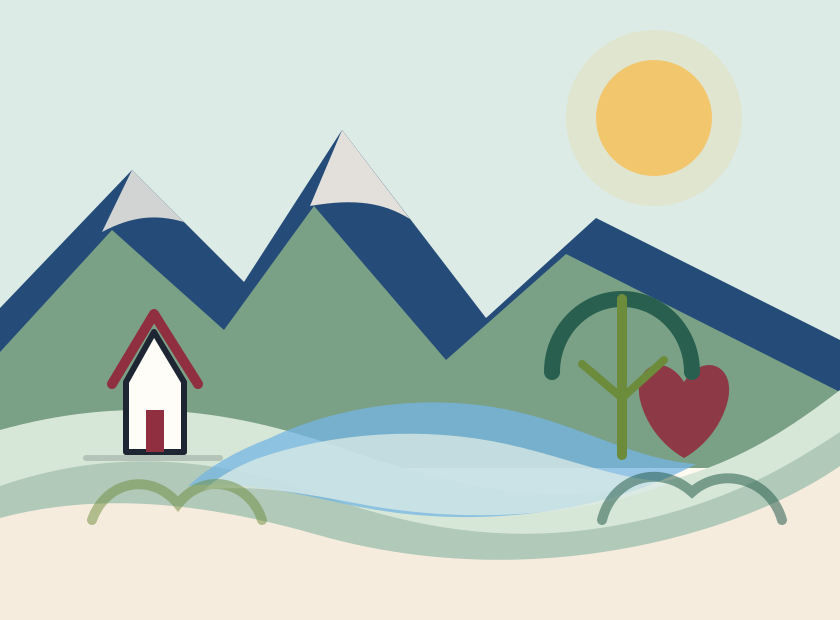
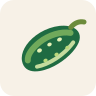

Araba Piyasasının Nabzı
Yeni araba alma ihtimali ufukta görünmese bile piyasa yoklanır. Fiyatlar, modeller, fırsatlar; hepsi bir baba radarından geçer.

Karakter kartları
Babacığımın birtakım klasikleşmiş özellikleri
Yeni araba alma ihtimali ufukta görünmese bile piyasa yoklanır. Fiyatlar, modeller, fırsatlar; hepsi bir baba radarından geçer.
İnsan odaklı, sahiplenen, yönlendiren ve işin doğrusunu göstermeye çalışan tarafın hep baskın. Oldukça sert bir komutan olduğun oluyor ama asıl amacın içten içe korumak.
Dolu bir zihne ve konuşurken düşünen bir yapıya sahip olduğundan yaşlılığın etkisiyle konuşmaya başlarken uzun esler verdiğin oluyor.
Bana amcamın adıyla, amcama benim adımla seslenmesi artık kanıksandı. İkimiz de kime seslendiğini biliyoruz.
Cömertliğin sadece vermek değil, birinin arkasında durmak olduğunu senden gördüm. Hayatın her bağlamında cömert birisisin.
Evde koltukta oturan o peluş gıdılı adamla cezaevindeki adam asla aynı kişi değil. Eskiden cezaevindeki adam eve de geldiğinden korkutucuydun. Büyüdükçe her iki adamın da güven veren tarafı daha görünür oldu.
Her ne kadar benim de değerim olsa da sonuçta bu değeri babamdan aldım. Köye gitmenin zahmetine rağmen her hareketinden, yükleri arabaya taşırkenki gerginliğinden hevesini anlayabiliyoruz.
Küçükken sertliğin daha büyük görünürdü. Şimdi geriye bakınca, o sertliğin içinde koruma, sorumluluk ve hayatı ciddiye alma refleksi olduğunu daha iyi anlıyorum.
Küçük anılar
Anlam bazen bir salatalığın ucunda, bir otoparkın betonunda veya masadaki uzun bir tartışmadadır.

Küçükken büyük bir özenle salatalık soymuştum. Sonra sen gelip salatalığın çoğunu tek hamlede ısırdın. Ben de kendi emeğimden doğru düzgün yiyemeyeceğimi anlayınca ağladım. Şimdi komik geliyor ama o gün çocuk kalbim için adaletsizlikle karşılaştığım ilk anlardandı.
Bir gün evin önündeki otoparkta benimle top oynamanı çok istemiştim. Nihayetinde ikna olup benimle oynamıştın. Belki senin için sıradan bir andı ama benimle pek oyun oynamazdın. O gün oynaman benim için çok özeldi.
Paranın gücün doğası ile ilgili her şeye hükmedemeyeceğini bu tartışmamız sayesinde anlamam beraberinde çığ gibi büyüyen bir kartopu doğurdu. Kısaca anlatmam gerekirse paranın sadece son üç yüz yılda popüler bir meta olduğunu bu pencerenin varlığı sayesinde keşfettim.
Sistemler üzerine tartışırken hayatın yalnızca iyi niyetle işlemediğini daha iyi gördüm. Kapitalizmin vahşi tarafını ve bütün sistemlerin sert gerçeklerini düşünmeme sebep oldun.
Bana öğrettiklerin
Teşekkür
Bazı şeyleri küçükken sadece sertlik, kural veya lüzumsuz tartışma gibi görüyordum. Şimdi daha iyi anlıyorum: Tavırlarının çoğunda beni hayata hazırlama, koruma ve ayakta durmayı öğretme çabası vardı.
Cömertliğin, sahiplenişin, küçükken bazı hafta sonları beni gezdirmelerin, esprili dilin ve beni hayatında koyduğun yer için teşekkür ederim. İyi ki varsın baba.
Sürpriz final
Final mesajı